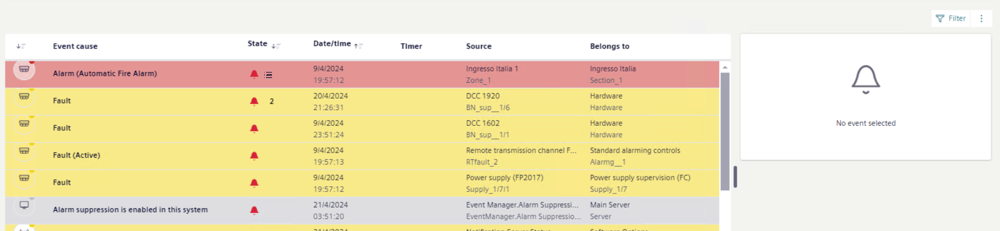

Event List Columns
In Flex client web/desktop app on large monitors, after you increase the width of the Event List area, Event List changes to table view and column headers become available on top of it.

- The visible headers and their order may vary depending on column customization. In addition, note that resizing the browser window may prevent the column headers and some details from being displayed. If you reduce the browser window size, make sure to have a sufficient view of the required information.
- On top right of event details, use to customize the columns. For instructions, see Show, Hide, or Rearrange Columns in Event List.
- You can also rearrange event sorting directly from the column headers. For instructions, see Changing the Sorting of Events.
Column Header | Description | |
|---|---|---|
Discipline/category | Event icon | |
Event cause | Descriptive text of the event cause. | |
State | Includes the following:
| |
Date/time | Event date and time | |
Timer | Indicates that a countdown timer is active for that unprocessed event. When the countdown ends, the event will be escalated. | |
Source | Event source. Hover over the column content to view the full source information in a tooltip. NOTE: Depending on your profile, you may not be able to move, hide, or resize the Source column. | |
Belongs to | Parent of the object property that issued the event. | |
Informational text | Text configured for the off-normal and normal conditions of the event source. | |
Path | The entire System Browser path of the object that issued the event. Hover over the column content to view the full path information in a tooltip. | |
Commands | Available command for handling the event. You can directly select the button to send the corresponding command. NOTE: Depending on your profile, you may not be able to send event-handling commands when Event List is filtered. | |
Proposed action | Describes the next action the operator must take for handling the event. | |
State icon | Proposed action text | |
|
| |
| One of the following:
| |
|
| |
| One of the following:
| |
System name | Indicates the name of the individual system where a specific event occurred. | |
Event message | Text that consists of one of the following:
| |
In process by | Indicates details of the event processing as follows:
If the computer or device/user data was not specified in the configuration, [localhost]+[user’s short name] displays instead. Furthermore, for recurrences of the same event, after you select the most recent recurrence of that event in Event List:
| |
Alias | Indicates a customer-assigned name used to identify the technical equipment within the building/facility. | |